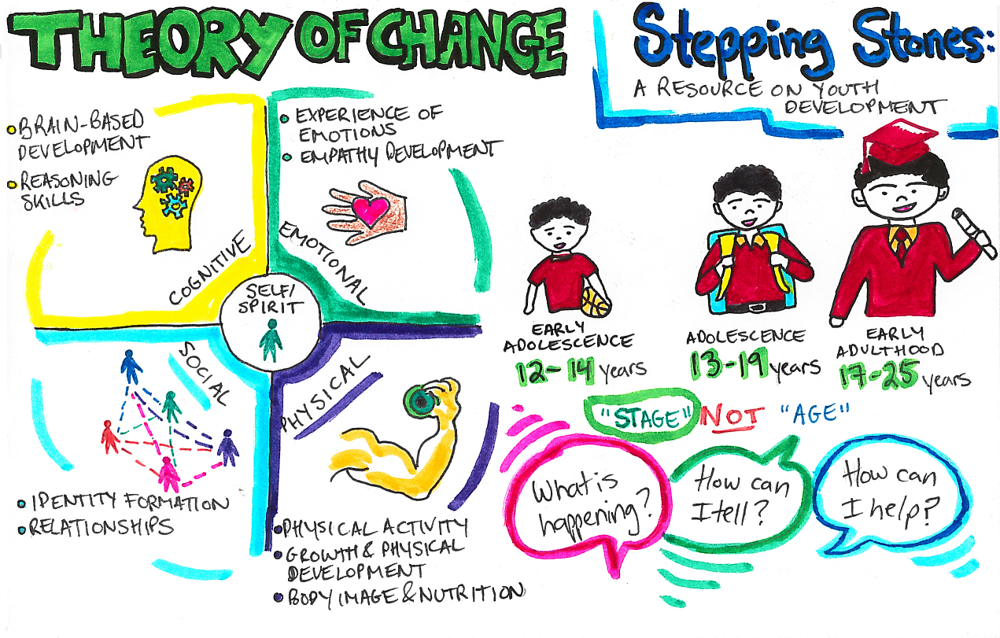
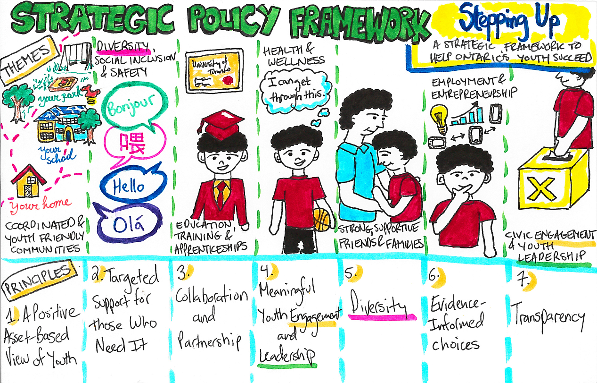
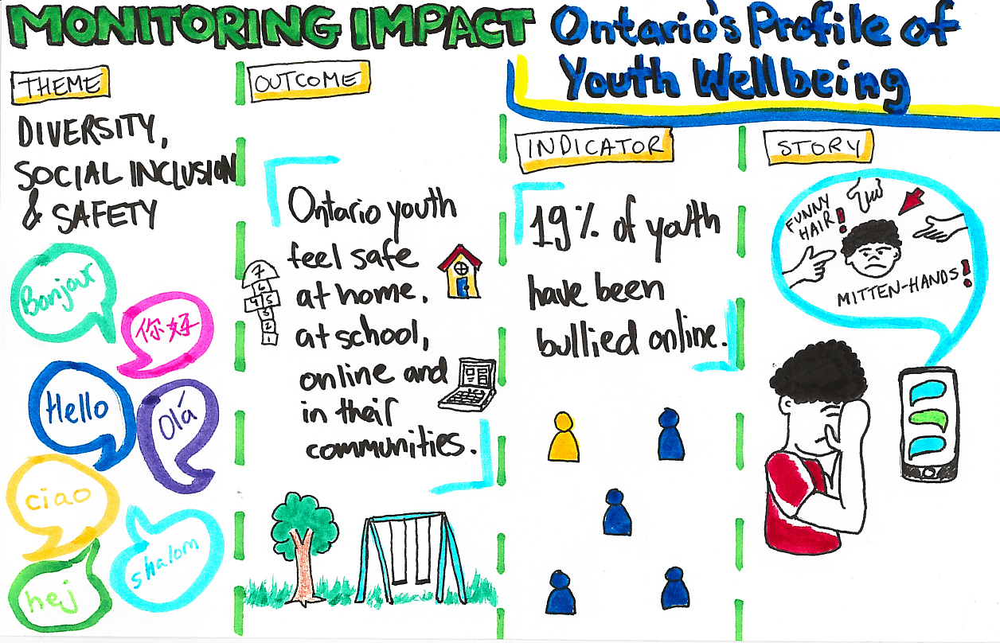

Mini-Hackpack for Policy+

Tweet: #polihack #onyouth
Hosted on GitHub Pages — Theme by orderedlist
Welcome to the Policy+ MiniHack!
November 22nd, 2016
The Ontario Youth Strategy rallies partners from across multiple sectors to improve outcomes for youth. The Strategy focuses on providing equitable and targeted supports for sub-populations of youth (e.g Indigenous youth, newcomer youth) who may also face multiple barriers to success.
Your mission, if you choose to accept it, is to use your expert knowledge to help link disconnected youth to the labour force.
Problem Statement
How might we help youth, who have become disconnected from school or work, enter the labour market and set themselves up for success later in life?
Agenda
PoliHack 101: 10-15 minutes
Empathy Mapping: 15 minutes
Experience Mapping: 15 minutes
How Might We Statements and Policy Recommendation: 30 minutes
Sharing: 10-15 minutes
Homework: Theory of Change - Stepping Stones
A Resource on Youth Development

Stepping Stones provides up-to-date research and information about youth development to guide the delivery of high quality supports and services for youth aged 12 to 25 across Ontario. It is designed to help anyone who works with or cares for youth to identify and respond to their needs at each stage of their development
Homework: Strategic Policy Framework - Stepping Up
A Strategic Framework to help Ontario’s Youth Succeed 
Stepping Up establishes a strategic framework to help guide, focus and maximize our collaborative actions to support young people. At its core is a set of 20 outcomes that can help all of us – service providers, foundations, community groups, governments, young leaders and families – better align our work with what research and youth themselves say is important for their success. It is a basis for MCYS sustained, collective action in support of Ontario's young people.
Homework: Monitoring Impact - Ontario’s Profile of Youth Wellbeing
The Profile of Youth Well Being is based upon the Stepping Up framework. The goal of the Profile is to give a snapshot on how Ontario Youth are doing.